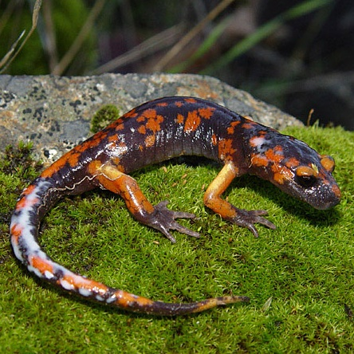

Ensatina eschscholtzii ssp. platensis
- Common name
- Sierra Nevada Ensatina
- Family
- Plethodontidae
- Family common name
- Lungless salamanders
- Order
- Caudata
- Order common name
- Salamanders
- Taxonomic note:
- This species is divided into several subspecies, including two found in the Sierras, which differ in coloration pattern. Ensatina eschscholtzii ssp. platensis is called the "Sierra Nevada Ensatina" and is gray to brown above, with prominent orange blotching. Ensatina eschscholtzii ssp. xanthoptica is called the "Yellow-eyed Ensatina" and is orange-brown above, orange below.
- Habitat and Range
- Typical habitat includes coniferous forest, deciduous forest, oak woodland, coastal sage scrub, and chaparral in thermally buffered mesic microclimates, such as under logs, bark, moss, leaf litter, and talus, or in animal burrows. E. e. platensis inhabits the Sierra of California, from north end of Central Valley to Transverse Ranges. E. e. xanthoptica is only found in the foothills of the Sierra, as well as parts of the central valley from Healdsburg, along the E. side of San Francisco Bay, to Santa Cruz.
Range Map
Seasonality